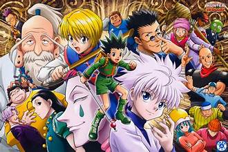
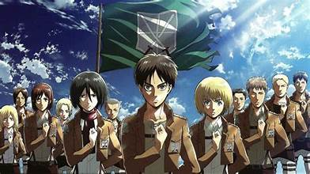
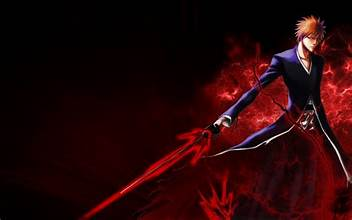
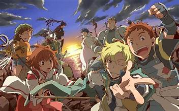
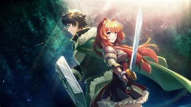

demon slayer
"Demon Slayer: Kimetsu no Yaiba," created by Koyoharu Gotouge, is a gripping anime that revolves around Tanjiro Kamado, a young boy thrust into the dangerous world of demon slaying after his family is brutally attacked by demons, resulting in the transformation of his sister Nezuko into a demon. In his pursuit of revenge and a remedy for Nezuko, Tanjiro enlists in the Demon Slayer Corps, an elite unit of fighters committed to battling demons and defending mankind. The series unfolds as Tanjiro hones his swordsmanship skills and encounters a diverse array of characters, each with their own tragic pasts, leading to a relentless and visually stunning journey filled with intense battles and emotional depth.
"Demon Slayer" is a story that skillfully combines supernatural themes, traditional Japanese folklore, and deep character development. The characters' progress and personal problems, together with the painstakingly rendered fight scenes, add to the series' overwhelming praise. Overall, "Demon Slayer: Kimetsu no Yaiba" stands as a testament to the captivating storytelling and exceptional animation that have made it a beloved addition to the anime landscape.

hunter x hunter
"Hunter x Hunter," created by Yoshihiro Togashi, is a captivating anime that revolves around Gon Freecss, a young boy who aspires to become a Hunter—a prestigious and elite profession that involves various tasks such as hunting elusive creatures, seeking treasures, and uncovering hidden mysteries. Gon embarks on a journey to find his long-lost father, Ging Freecss, who is a legendary Hunter. Along the way, Gon forms lasting bonds with friends such as Killua Zoldyck, Leorio Paradinight, and Kurapika, each of whom has their unique goals and motivations. The series explores the complex Hunter Exam, dangerous Nen abilities, and the intricate dynamics of the Hunter Association, providing a rich and multifaceted narrative.
"Hunter x Hunter" distinguishes itself through its intricate world-building, strategic battles, and character depth. The anime delves into the psychological aspects of its characters, challenging traditional shonen tropes. Togashi's storytelling prowess shines through in the Chimera Ant arc, where the narrative reaches new heights of complexity and emotional depth. As Gon navigates the challenges of becoming a Hunter, the series unfolds with a perfect balance of action, adventure, and introspective moments. "Hunter x Hunter" stands as a masterclass in anime, blending elements of fantasy, strategic combat, and character-driven storytelling.

attack on titan
"Attack on Titan," created by Hajime Isayama, is a critically acclaimed anime set in a world where humanity is on the brink of extinction due to giant humanoid creatures known as Titans. The story follows Eren Yeager, Mikasa Ackerman, and Armin Arlert as they join the military to fight against the Titans and uncover the mysteries surrounding their origin. The narrative takes a dark turn when Titans breach the massive walls protecting the last bastion of humanity, leading to a relentless struggle for survival.
The series captivates viewers with its intense action sequences, complex characters, and a plot filled with political intrigue and shocking revelations. "Attack on Titan" explores themes of sacrifice, freedom, and the consequences of war as the characters grapple with the harsh realities of their world. With its high-stakes battles, intricate world-building, and unpredictable twists, "Attack on Titan" has become a defining and influential anime within the dark fantasy and action genres. As the series progresses, it leaves a lasting impact by questioning morality and pushing the boundaries of traditional storytelling in the anime medium.

bleach
"Bleach," created by Tite Kubo, is an exhilarating anime that centers around Ichigo Kurosaki, a teenager with the ability to see ghosts. His life takes a drastic turn when he unintentionally obtains the powers of a Soul Reaper, a celestial being responsible for guiding departed souls to the afterlife and protecting the living from malevolent spirits known as Hollows. As Ichigo reluctantly assumes the role of a Soul Reaper, he must navigate the spirit world, face formidable adversaries, and protect his loved ones from supernatural threats.
The anime stands out for its dynamic and visually impressive battles, where Ichigo and his friends, each with unique abilities, confront Hollows and other supernatural entities. "Bleach" explores themes of duty, friendship, and the blurred lines between the spirit and human realms. With its intricate lore, diverse cast of characters, and adrenaline-pumping action, "Bleach" has left an indelible mark on the anime landscape, becoming a beloved classic for fans of the fantasy and action genres. The series successfully combines supernatural elements with intense combat, creating a compelling narrative that has resonated with audiences worldwide.

log Horizon
"Log Horizon," penned by Mamare Touno, is a captivating anime that unfolds within the immersive massively multiplayer online role-playing game (MMORPG) Elder Tale. The story commences when a large number of players find themselves unable to log out of the game after a new expansion pack is introduced. Protagonist Shiroe, an intelligent strategist, teams up with other players—Naotsugu and Akatsuki—to navigate the challenges of the game-turned-reality.
The series delves into the intricacies of living in this virtual world, exploring the consequences of being trapped and the strategies required for survival. Shiroe's analytical mind and the diverse personalities within the group contribute to their attempts at adapting to the new reality, forming alliances, and solving the mysteries of the game. "Log Horizon" stands out for its focus on world-building, political dynamics, and the exploration of the psychological aspects of being stuck in a fantasy realm. With its unique take on the isekai genre and emphasis on strategic gameplay, "Log Horizon" has garnered praise for its depth and character development.

shield Hero
"The Rising of the Shield Hero," created by Aneko Yusagi, unfolds as an isekai tale where Naofumi Iwatani, along with three other young men, is summoned to a parallel world to become its Cardinal Heroes and defend it against waves of inter-dimensional catastrophe. Each hero is bestowed with a legendary weapon, and Naofumi receives the Shield. However, his journey takes a dark turn when he is falsely accused of a crime he did not commit, ostracized by society, and left to navigate the challenges of the world alone.
The series explores themes of betrayal, resilience, and redemption as Naofumi transforms from a mistrusted outcast into a formidable hero. With the Shield as his primary weapon, he discovers unique abilities and forms alliances with unlikely companions, including Raphtalia and Filo. "The Rising of the Shield Hero" distinguishes itself by subverting traditional isekai tropes and presenting a protagonist who faces adversity and grows stronger through sheer determination. The anime is praised for its character development, intricate world-building, and the exploration of moral ambiguity within its fantasy setting. As Naofumi battles to save the world, the series delivers a compelling narrative that keeps viewers engaged with its mix of action, drama, and fantasy elements.

Seraph of the End
"Seraph of the End," an anime based on the manga by Takaya Kagami, presents a gripping post-apocalyptic tale where a devastating virus wipes out most of humanity, leaving only children to be subjugated by vampires. Yuichiro Hyakuya, the protagonist, fueled by a desire for revenge after losing his family, joins the Japanese Imperial Demon Army to combat the vampire overlords. The series unfolds with intense battles, supernatural elements, and a mix of political intrigue, creating a dark and dynamic narrative that keeps viewers on the edge of their seats.
With its compelling characters, atmospheric world-building, and a blend of horror and fantasy elements, "Seraph of the End" explores themes of resilience, revenge, and the complexities of survival in a world dominated by supernatural forces. As Yuichiro and his comrades navigate the treacherous post-apocalyptic landscape, the series delivers a captivating mix of action and drama that makes it a standout entry in the realm of dark fantasy anime.

Goblin Slayer
"Goblin Slayer" is a dark fantasy anime adapted from the light novel series written by Kumo Kagyu. The story follows a stoic adventurer known only as Goblin Slayer, who is singularly dedicated to eradicating goblins—the weakest but often underestimated creatures in the fantasy world. Despite their seemingly harmless reputation, goblins are known for committing heinous acts, leading the Goblin Slayer to pursue them relentlessly. The anime takes a grim and mature tone, portraying the brutality of the fantasy world and the consequences faced by those who underestimate the goblin threat.
The series delves into the psychological and physical toll of the Goblin Slayer's quest, exploring themes of trauma, survival, and the harsh realities of the adventurer lifestyle. "Goblin Slayer" is distinct for its gritty portrayal of fantasy, emphasizing the darker aspects of dungeon-crawling and the impact of violence on the characters. With intense action sequences, strategic combat, and a focus on character development, the anime appeals to those seeking a more mature and unconventional take on the fantasy genre.

Black Clover
"Black Clover" is an anime series based on the manga written and illustrated by Yūki Tabata. Set in a world where magic is everything, the story follows Asta, a young boy born without any magical abilities, in a society where magical prowess determines one's worth. Despite his lack of magic, Asta dreams of becoming the Wizard King, the most powerful mage in the Clover Kingdom. His determination leads him to acquire a unique anti-magic grimoire, setting the stage for his journey to prove himself and protect his kingdom.
The series is known for its high-energy action, magical battles, and the camaraderie between Asta and his friends in the Black Bulls squad. "Black Clover" explores themes of perseverance, friendship, and the idea that one's worth is not solely determined by magical abilities. With its fast-paced storytelling, dynamic animation, and a diverse cast of characters, the anime has gained popularity among fans of the shonen and fantasy genres. Asta's journey to overcome his limitations and achieve his dream is at the core of "Black Clover," making it an engaging and entertaining series.